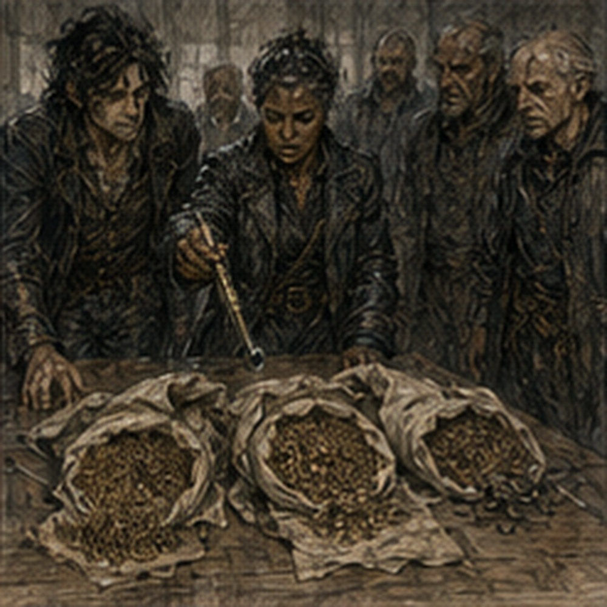

South Canal smelled exactly the same. This was reassuring. Wet rope. Grain dust. Canal water. Horse piss. Somebody frying onions badly. Darrowmere had not improved the district. I crossed the towpath with Edrin’s note in my pocket and the LIMITED CASTING tag still on my wrist. A barge slid beneath the nearest crane while two men argued about whose responsibility a rope had become. Neither looked at the sky. Neither asked whether monsters were coming.
Good. Verran Grain Stores was closed. Not empty. Closed. A Guild seal crossed the street doors. Another covered the smaller office entrance. The painted wheat sheaf above them looked embarrassed. I checked Edrin’s note.
SOUTH CANAL SEAL OPENED.
Not Verran warehouse. Of course. I had gone to the old problem instead of the current location. Excellent. A boy sweeping grain from the neighboring loading step watched me read the note twice.
“Guild annex,” he said.
I looked at him. He pointed down-canal with the broom.
“Blue door.”
“Thank you.”
“You’re the third.”
“Third what?”
“Person who came here first.”
That helped less. I walked. The Guild annex was three warehouses down, small enough that I had passed it the first time without remembering it. Blue door. Silver square. Two barred windows. No drama. Inside, Edrin Saye was eating an apple. That was not the part I noticed. The sacks were.
Three of them sat on a waist-high stone table beneath a hanging lamp. Dark cloth. Heavy weave. Each mouth had been cut open below the old closure rather than untied. The original cord and seal remained intact above the cuts like severed heads. Edrin saw me looking.
“Door.”
I closed it.
“Hands.”
I showed her both.
“Empty?”
“Yes.”
“Keep them that way.”
“I received the note.”
“I know.”
“You wrote it.”
“That was how I knew.”
She bit the apple. I moved closer. Not too close. There were four other people in the room. A Guild clerk at a side desk. A watch constable I did not know. Nella from Verran’s warehouse. And Merek Verran. He looked worse. Not injured.
Expensive coat gone. Plain shirt. Beard less controlled. The particular exhaustion of a man who had spent several days discovering that other people could ask questions longer than he could refuse them. Nella looked about the same.
That probably said something about who had done the actual work before this. Verran saw me.
“You.”
“Yes.”
“You brought him?”
He asked Edrin. Edrin said, “No. He came because I sent for him.”
“That is bringing.”
“No.”
I liked her. Verran did not. The contents of the first sack were spread across three shallow trays. Gray-black pellets. Not stone. Not seed. Irregular pieces, each about the size of a thumbnail. Matte surfaces. Some had pale veins. Others looked almost porous. I knew them. No. I knew something near them. That distinction mattered.
My memory supplied a workshop bench, a cracked ceramic bowl, and someone saying, You paid how much for this rubbish? Whose workshop? Gone. When? Gone. What was in the bowl? Maybe this. Maybe not. I leaned. Edrin said, “Hands.”
“They are behind my back.”
“Keep them there.”
I did.
“What is it?”
“Processed sinkstone.”
I frowned.
“That is a trade name.”
“Yes.”
“What is the material?”
“Mostly kestrin shale.”
That pulled my attention hard enough that I forgot Verran.
“Kestrin?”
“Mostly.”
I looked again. Cheap. Brittle. Mildly mana-reactive. Mostly rubbish. The same kind of stone I had noticed in Carrow days after waking. Not valuable. Except processed.
“How?”
Edrin pointed at the trays.
“You tell me.”
I looked at her.
“You identified it.”
“I identified enough.”
Her note. Enough to become more annoying. Good. I examined without touching. The pellets were too uniform in behavior and too irregular in shape. Broken after treatment, not shaped before. Pale veins could be binder. Salt. Glass. Something fired into the pores.
“Heat?”
“Yes.”
“Then soak?”
“Probably.”
“In what?”
“Unknown.”
“Mana-active solution?”
“Obviously.”
“Not obviously.”
“It reacts to mana.”
“So does my head.”
Edrin took another bite. The clerk hid a smile. I looked closer. Sinkstone. The name arrived from later memory now that I had the current one. Not this exact product. A category. Cheap reactive aggregate treated to absorb, blur, or flatten small magical residues. Used later in ward shops, evidence handling, some artificer benches, cheap shielding boxes, counterfeit suppression, and several criminal applications that had made entire committees very tired.

Later. Now?
“How common is this?”
Edrin said, “Not very.”
“Legal?”
“Yes.”
Verran spoke.
“Thank you.”
Edrin looked at him.
“I did not say yours was.”
He shut up. Good.
“What does this batch do?” I asked.
Edrin set down the apple. She took a brass rod from the table. One end held a small blue bead.
“Do not cast.”
“I know.”
She touched the bead. A faint line of blue light crawled halfway up the rod. Then she lowered it over the first tray. The light dimmed. Not vanished. Dulled. The closer the bead came to the pellets, the less distinct the line became.
“Absorption?” I asked.
“Some.”
“Interference?”
“Some.”
“Storage?”
“Maybe.”
“Release?”
“Maybe.”
“That is unpleasant.”
“Yes.”
She moved the rod away. The light returned. I watched the pellets.
“How long?”
“What?”
“After exposure. How long do they hold whatever they’re taking?”
“Variable.”
“Minutes?”
“Yes.”
“Hours?”
“Yes.”
“Days?”
“One sample still reads active from yesterday.”
That changed the object. Not shielding. Not merely. A cheap material that could take on magical residue and keep some of it. My mind opened six doors. Evidence preservation. False evidence. Ward contamination. Charge transport. Spell smoothing. Cheap buffers. Disposable anchors. Bad contraception. No. Probably not. Maybe. I shut that door.
“Who made it?” I asked.
Nella answered.
“Not us.”
First thing she had said. I looked at her. She folded her arms.
“We store grain.”
Verran said, “I have said that repeatedly.” Nella looked at him.
“You also said the sacks were grain.”
Silence. Right. I had almost forgotten the first lie because better questions had arrived. I turned to Verran.
“Why?”
He looked at Edrin.
“Am I required to answer him?”
“No.”
“Then no.”
Fair. I looked at Edrin.
“Why am I here?”
“You were present when the sacks were targeted, and you heard Ors’s claim. I want your account in the room while we compare the seals.”
Verran said, “That is not a qualification.”
“It is relevant to this examination,” Edrin said. The constable coughed into his fist. I was enjoying this too much. Edrin pulled a second tray forward. The pellets here had been crushed. Inside, several showed tiny glassy inclusions. Not natural.
“Binder?” I asked.
“Maybe.”
“Vairglass?”
Edrin looked at me. That was enough. I leaned closer. The inclusions were too pale. Corven’s vairglass had been dark green-black in the raw, dangerous around active mana and deadroot. This was processed. Maybe powdered. Maybe something else entirely.
“Not enough to say,” I corrected.
Edrin nodded. Good. Verran asked, “Can I leave?”
“No,” the constable said.
Verran sat back. I asked, “Where did the sacks come from?” Nobody answered. Not because nobody knew. I looked at Nella. She looked at Verran. There. Edrin noticed too. Probably had noticed yesterday.
“Nella?” she asked.
Nella exhaled.
“I received them.”
Verran turned.
“You were told not to discuss invoices,” Verran said.
“I was told by you,” Nella said.
The constable straightened. Verran said, “Nella.” She ignored him.
“Six sacks came in eleven days before the first theft.”
Six. Three remained when we arrived. Nine had supposedly been stolen across three nights according to the posting. No. The posting had said two, four, three ordinary sacks missing. Those were Verran’s claimed losses. The hidden sacks were separate. Or were they?
“Six dark sacks?” I asked.
“Yes.”
“How many were here when the break-ins started?”
“Six.”
“How many after the first?”
“Six.”
“Second?”
“Five.”
“Third?”
“Three.”
That was not the contract. I looked at Verran. He looked furious. Nella continued before anyone asked.
“Ordinary grain was moved too. First night two sacks of rye. Second night four barley. Third night three mixed stock.”
So the posting was technically true. It had simply omitted the valuable target. Verran had paid the Guild to stop theft while hiding what the thieves actually wanted. I already knew that broadly. Now the counts mattered.
“Ors’s group took three sinkstone sacks before we caught them?”
“We do not know that,” Edrin said.
“Three disappeared.”
“Yes.”
“Ors said Verran stole them.”
“He said Verran stole the sacks. He did not identify the contents.”
“Did he know?”
“Unknown.”
Good.
“What was the delivery source?”
Nella looked at the clerk. The clerk opened a ledger.
“Transfer mark says North Quay Consolidated Storage.”
I knew the name only because it was boring.
“Owner?”
The clerk said, “Declared owner at transfer: Silas Marris Trading.” Nothing.
“Origin before North Quay?”
“No clean entry.”
“Payment?”
Verran said, “Private.” The constable said, “Not anymore.” Verran’s jaw moved. Nella said, “Storage credit.” I looked at her.
“What does that mean?”
“It means they did not pay us to hold it. We owed them storage against a grain purchase.”
That was interesting. Not cash. A reciprocal commercial arrangement.
“Who is they?”
Nella looked at the ledger.
“Silas Marris.”
“Person?”
“Company.”
“Have you met them?”
“No.”
“Verran?”
He said nothing. That was almost an answer. Edrin pushed the apple core onto an empty dish.
“Here is the part I wanted you for.”
She picked up the intact closure from the first sack. Cord. Blackened seal. The seal had looked like ordinary cloth magic when closed. Old. Dirty. Stable under load. Now the sack had been cut below it. The closure remained sealed around nothing. I stared.
“That should have released.”
“Why?”
“If the seal’s condition was the mouth of the sack.”
“It wasn’t.”
“Yes.”
She waited. I corrected myself.
“Apparently.”
Edrin held the empty sealed ring by the cord.
“Still active.”
“How active?”
“Less.”
“How much less?”
“About a third.”
“What changed when you cut the cloth?”
“Nothing immediately.”
“When did it drop?”
“First handful removed.”
I stopped.
“Weight?”
“Maybe.”
“Volume?”
“Maybe.”
“Material contact?”
“Maybe.”
“Contents?”
“Maybe.”
“Useful.”
“You see why I wrote annoying.”
Yes. The seal was not simply locking the sack. It was doing something with the contents. Or monitoring them. Or maintaining a condition that depended on them. I looked at the pellets.
“Did all three seals drop the same?”
“No.”
“How different?”
“Eleven percent, thirty-one, and almost half.”
“By amount removed?”
“No obvious match.”
“By exposure?”
“No.”
“By which sack?”
“Yes.”
I looked at her.
“That was a bad answer.”
“It was an accurate answer.”
“What was different between the sacks?”
“That is your irritating question.”
I looked. Three sacks. Same cloth at first glance. Same cord. Same seal style. Same contents category. Not same behavior. The easy answer was different batches. The better answer was that the seal had been doing different work. I walked around the table. Hands behind back. No casting. The third sack had a darker stain near the base. Old damp? Oil? Reagent?
The second had a repair patch. The first did not.
“Were they filled at the same time?”
“Unknown.”
“Same weight?”
“Within four pounds when seized.”
“Before theft?”
Nella said, “I never weighed them.”
“Who placed them?”
“Verran told me where.”
I looked at him. He looked away.
“Where?”
“Rear grain stack. Against the canal wall.”
The thieves’ entry point. Convenient. Too convenient. Maybe deliberate access. Maybe concealment among grain. Maybe both.
“Did the sender specify placement?”
Nella hesitated. Verran said, “Enough.” The constable said, “No.” Nella’s mouth tightened.
“Yes.”
There.
“What did they specify?”
“Cool. Dry. No active wards within six feet.”
Edrin and I spoke at the same time.
“No active wards?”
Nella nodded. I looked at Edrin. She looked annoyed now. Not at me. Good.
“Your warehouse has wards,” she said to Verran.
“Door marks.”
“Active?”
“Of course.”
“How far?”
Nella answered.
“Rear stack is outside the office ward line.”
So Verran had placed them exactly where instructed. And lied about what they were. That made him less stupid. Not innocent. Different.
“Why hide them from the Guild?” I asked.
He finally looked at me.
“Because they were not mine.”
There. The room changed. Not dramatically. Nobody gasped. The constable already knew, probably. Nella looked tired rather than surprised. Edrin picked up her apple core, remembered it was finished, put it down again. I said, “Whose?” Verran rubbed both hands over his face.
“Silas Marris.”
“You were storing them.”
“Yes.”
“Off ledger?”
“No.”
The clerk tapped the page. Technically on ledger.
“Under a false goods category?” I asked.

Verran said, “Processed mineral packing.”
“That is not entirely false.”
“No.”
“Why?”
He looked at the constable. The constable said, “You can answer or not. It will be in the statement either way.” Verran laughed once without humor.
“They wanted discretion.”
“Why?”
“They paid for discretion.”
“With storage credit.”
“Yes.”
“How much?”
“Greg,” Edrin said.
Right. Not my investigation. I looked at the sacks. Three missing. Three recovered. Ors said Verran stole them. Maybe from Silas Marris. Maybe Silas Marris stole them first. Maybe Ors had been hired to recover property. Maybe he was simply a thief with a moral vocabulary.
“Did you know what they did?” I asked Verran.
“No.”
I believed him. That was inconvenient.
“Did you know they were magical?”
“Yes.”
“Dangerous?”
“I was told stable if left alone.”
Edrin said, “Which was true.”
“Valuable?”
Verran hesitated.
“Yes.”
“How valuable?”
“Enough.”
Not enough. But Edrin’s face told me to stop. I stopped. Mostly.
“Why the fake vermin possibility in the contract?”
Nella answered.
“Standard form.”
Of course. The world occasionally refused symbolism. I moved to the second sack. Something about the repair patch bothered me. Not magical. Physical. The patch thread was pale. The closure cord was dark. The sack cloth dark.
Why repair a sack carrying magical material with ordinary pale thread? Because the sack itself was not special. The seal was. Or the contents.
“Can the pellets be moved safely now?”
Edrin said, “In small quantities, yes.”
“Together?”
“Probably.”
“That word is doing work.”
“Yes.”
“What happens if you combine samples from different sacks?”
“We have not.”
“Why?”
“Because I am not you.”
Fair.
“But you want to.”
“No.”
Lie. Small. Professional. She wanted to know and had correctly decided not to create a new variable before understanding the old ones. I smiled. She saw it.
“Do not.”
“I didn’t say anything.”
“You made the face.”
Everyone knew my faces. This city was unsafe. The door opened. The ink-thumb clerk from the main Guild office stepped in carrying another ledger and a narrow wooden box. I stared.
“You travel.”
“Unfortunately.”
She handed the ledger to Edrin.
“Recovery inventory from Darrowmere.”
I looked at the box. She looked at me.
“No.”
“I didn’t ask.”
“You were going to.”
“Yes.”
Edrin set the box on a separate shelf. Not the sinkstone table. Good. Separate problems. The clerk turned to leave.
“Wait,” Edrin said.
She opened the ledger. Read. Then looked at me. Not the box. The ledger.
“What?”
She turned it around. A list. Creature tissue. Claw sections. Hair. Black blood residue. Sternum ridge fragment. Contaminated cloth. Road soil. Nothing surprising. Then lower. Recovered foreign material from wound cavity. Small mineral fragments, gray-black, glass inclusions. I did not move. No. Too easy. Too neat. I read it again. Gray-black was half the world. Glass inclusions were half the workshop district.
“Do not,” I said.
Edrin’s eyebrows rose.
“I was not speaking.”
“To me.”
Good. I looked at the sinkstone. Then at the closed wooden box across the room. Could be related. Could be road grit. Could be wagon material. Could be something embedded before Darrowmere. Could be completely different. The dangerous thing was not connection. The dangerous thing was wanting connection. I pointed at the ledger.
“Who collected it?”
“Darrowmere recovery team.”
“From which creature?”
“Road corpse.”
Cal’s sword creature.
“Where in the wound cavity?”
“Not specified.”
“Near steel?”
“Unknown.”
“Could it be road debris?”
“Yes.”
“Wagon debris?”
“Yes.”
“Could the creature have swallowed it?”
“Not from a wound cavity.”
“Could the wound have picked it up when it rolled?”
“Yes.”
“Same material?”
“Unknown.”
Edrin watched me. I looked back at the three trays.
“Test separately.”
“Yes.”
“Blind.”
She paused. Then nodded. Good. Not because I had solved anything. Because I had not. Verran said, “What creature?” Nobody answered him. He looked from Edrin to me.
“What does this have to do with my sacks?”
“Nothing yet,” I said.
That was the most important answer in the room. Edrin’s eyes shifted toward me. Approval? Maybe. Probably indigestion. The constable closed his notebook.
“Nella. You can go.”
She stood. Verran stood too.
“Not you.”
He sat again. Nella collected her coat. At the door, she stopped beside me.
“You ruined three nights of my life.”
“Verran did.”
“He was already ruining them.”
“Ors?”
“Him too.”
“Then why me?”
“You ask questions.”
“That seems unfair.”
“It is.”
She left. I watched her go. Independent life. Warehouse probably still shut. Job uncertain. Invoices somewhere. No dramatic revelation for Nella. Just consequences. I turned back.
“What happens to Verran Grain?”
Verran answered before anyone else.
“Nothing, if the Guild stops pretending stored goods make me a smuggler.”
The constable said, “Your doors are sealed.”
“Yes. I noticed.”
Edrin said, “The grain is being transferred under inventory.” Verran went still.
“To where?”
The clerk said, “Two neighboring stores and Guild reserve.”
“You cannot move contracted stock.”
“We can if it spoils under seizure.”
“That is my business.”
“Yes,” the clerk said. “Which is why you should have disclosed the warded mineral cargo when adventurers were contracted to fight people stealing it.”
There it was. Not prison. Not villain speech. Inventory. Contracts. Spoilage. Customers. Reputation. Money. Verran’s face changed more at the word transferred than it had at any accusation. That was his actual injury. I understood that. Antonius would too. I thought of the note in my pocket.
RUSK HAS WORK.
NO URGENCY.
Money waiting. South Canal money uncertain. My original contract payment had already been processed, but additional recovery had been at owner discretion. Verran was not feeling discretionary. I looked at the Guild clerk.
“Were the recovered dark sacks part of our recovery payment?”
Verran said, “Absolutely not.” The clerk said, “Under review.”
“Excellent.”
Verran glared at me. I smiled. Probably unwise. Edrin tapped the table.
“Greg.”
“Yes.”
“Why did you ask about combining the batches?”
“Because if each seal behaved differently, either the seal differs, the contents differ, or their history differs.”
“History?”
“Exposure. Charge. Storage. Whatever they absorbed before they got here.”
She looked at the pellets. That was the question she had wanted. Not because she could not invent it. Because another person saying it changed which test came next.
“Can you read stored residue?” I asked.
“Some.”
“Identity?”
“Sometimes.”
“Age?”
“Poorly.”
“Direction?”
“No.”
“Could you tell whether two sacks were exposed to the same source?”
“Maybe.”
There it was. Useful. No Barrier required. No ancient knowledge. Just a question. Edrin started rearranging the trays. I stepped back.
“Do you need me?”
“No.”
That was immediate. Good.
“When?”
“I will send word.”
“Today?”
“No.”
“Tomorrow?”
“Greg.”
“Right.”
I headed for the door. Verran said, “You.” I turned. Again. He seemed to dislike my pronoun.
“What?”
“You think I stole them.”
“I think Ors said you did.”
“That is not what I asked.”
I considered.
“No.”
He blinked. Neither answer he expected.
“I think you hid them,” I said. “I think you knew they were valuable and magical. I think you concealed that from the Guild while hiring people to stop theft. I think that was dangerous.”
His jaw tightened.
“But stolen?”
“I don’t know.”
He looked at me for a long moment. Then nodded once. Not gratitude. Recognition of a usable answer. I left. Outside, South Canal continued being South Canal. A wagon blocked half the street. Someone had dropped onions. The same sweeping boy had reached the next loading step. I had learned what the sacks were. Mostly. Processed sinkstone. Cheap material made valuable by treatment.
A warded cargo that could absorb or retain magical residue. Owned, apparently, by Silas Marris Trading. Stored by Verran under deliberate discretion. Three missing before we arrived. Three recovered. Ors’s accusation unresolved. And maybe, maybe, gray-black mineral fragments had been found in a Darrowmere creature wound. That last fact wanted to eat everything else. I did not let it. Not yet. My channels were still restricted.
Antonius had work. Alden was finding Berren. Edrin had tests to run without me. I stood on the towpath and realized I had no immediate reason to stay. That felt wrong. Then my stomach growled. Normal body. Excellent. I bought an onion pastry from a cart. It was terrible. I ate the entire thing.
Halfway back toward West Ward, I remembered where I had heard the phrase sinkstone used contemptuously. Not a workshop. A dungeon camp. Much later. Someone throwing a handful of gray pellets into a disposal bucket and saying cheap buffers always lie about what they keep. I stopped walking. What did they keep? The memory did not answer. Of course. I took out paper.
KNOW:
Current sinkstone can suppress or absorb some magical residue. At least some charge persists. Three seized batches behave differently. Silas Marris owns or claims them. Verran hid their nature. Three sacks missing. Possible similar-looking fragments in Darrowmere sample. UNCONFIRMED.
THINK:
Different behavior may reflect different prior exposure. Later sinkstone may be used as a buffer.
“Keep” may mean more than residual mana.
CHECK:
Edrin’s blind comparison. Silas Marris. Ors. Who processed the batch. I stared at the last line. Who processed it. That had the strongest claim. Not Darrowmere. Not yet. A manufacturing chain existed before Verran.
Someone had taken cheap kestrin shale and made it do this. That person, workshop, or process was real. Now. I folded the paper. West Ward first. Antonius had work. But after that, I wanted to know who taught rubbish to remember magic.